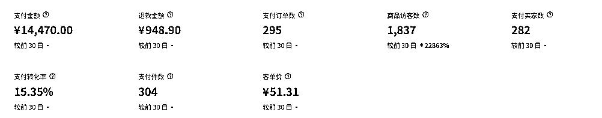
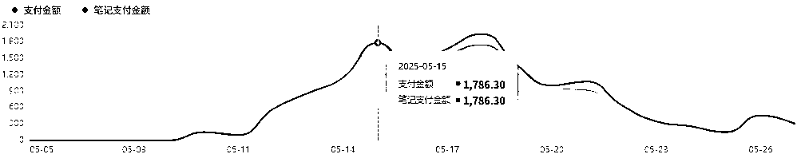
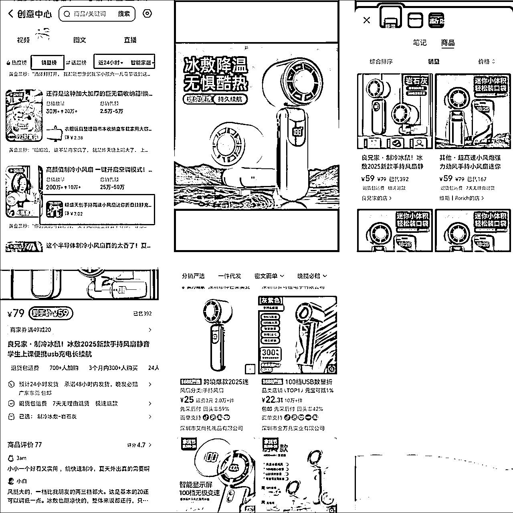
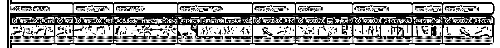
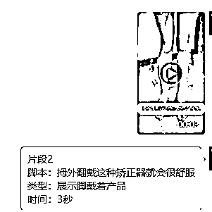

来源：https://vx6swdb957w.feishu.cn/docx/BZIJd7kk2oqOUGxTmZXcuW4JnX0
大家好，我是风声，进入生财之前一直在会计师事务所从事审计工作，参与并带队过各种企业的IPO、年审、专审等项目。因为对频繁的出差渐渐开始不适应，所以开始寻找新的出路，后面通过书豪老师了解并加入到了生财。
通过阅读精华帖以及参加航海极大的拓宽了我的视野，并在这个期间顺势走出了职场，目前一直在做的项目除了老本行以外还有同城家教中介以及小红书电商，感谢生财团队宝芙的邀请，在此对最近刚拿到一点小结果的小红书电商进行一个复盘。也非常推荐新进入生财的圈友可以“把手弄脏”，参与航海。
小红书电商我是在23年年底通过书豪老师了解到的，当时也出了几十单，但是因为主业又有新的项目要出差以及没有爆单，所以没有坚持下去，后面因为一直都有看到圈友拿到大的结果，所以再次萌生了做小红书电商的想法，为了了解最新的玩法以及能和圈友交流，报名了最近3月份的航海，不过我不算勤奋，没有每天坚持（大家不要学我），有空时才选个品做一批笔记进行测品，所以直到5月10号才开始迎来了第一次小爆，以下是最近半个月单篇笔记小眼睛10W+以后的结果：

笔记小爆增加的销售额是很迅速和直观的，几天就涨到了日GMV一千七，最高一千九：

我觉得对我来说这次爆单主要还是有一些运气成分，我们能做的就是选好品，然后剪视频发笔记，做好人工干预，剩下的就是交给运气，我是初期混剪后期转实拍的方式发笔记，在此复盘一下我的路径：
生财中的航海手册、精华帖、热门帖都是在这个项目上拿到了结果的人反复打磨出来的精华，并且经过了生财团队、广大圈友的验证筛选，非常非常有参考价值！而且每个人的方法可能会有些细微的不一样，看的越多你知道的细节也越完善。
我也是通过这次航海以及最近的精华、热门帖知道了现在的方法已经和以前不同，不再是单账号每天批量发布十几条笔记，而是新账号开始每天3-5条，再过渡到8条左右，并且发布十条左右最好夹带一条不带商品的笔记，这样更不会被认为是纯营销号。
很多圈友在前期选品不对，因此一直拿不到成绩。那么如何选品呢？我的回答是——一定要选择经过市场验证的品。
选品的方法有很多，最重要的也是选品，如果打一个红海品，你后面做的再好爆的几率也会大大降低，因为太多人打了，我觉得我这次能小爆主要也是因为刚好没有什么竞争对手，淘宝榜单、小红书站内、抖音创意中心、考古加、灰豚数据等选品方法，都可以用，只要能选到符合标准的产品就行，这些方法我也都会用。
爆品的一般选品逻辑是这样的，这次爆的产品我是在抖音创意中心发现的，所以拿抖音创意中心选品举例：
打开抖音创意中心查看销量榜>截图产品主图>小红书识图搜索>看销量榜最近是否有爆单（可以看看航海手册的蓝海品选品标准）>再去1688识图搜索这个产品看利润是否可行
举个例子，最近的爆款，这种手持风扇最近好多销量过万的，这种产品是季节性的，只有夏天爆：

这样子就是经过了小红书平台市场验证的，你再去跟爆的几率也更大，不过我那个产品我没看到有在小红书爆过，所以说这次能小爆还是有些运气成分的，没有看到同产品爆过我还是选择了测这个产品是因为我考虑到了这几个因素：
运气也确实不错，确实是一个蓝海品，从第一天发笔记开始就出单了。
笔记的发布第一步就是寻找素材。
我主要是发视频笔记，我找的素材最开始是抖音找的，用的混剪方法是学的书豪老师分享的混剪方法：一个小时剪辑出20条小红书带货笔记视频教程【单纯用剪映】-知识星球，一次剪好了二十条素材测品。
后面爆单了就找了个民宿钟点房实拍了几百条素材防止后续违规，实拍其实很简单，拍摄方面我是纯小白，后面发布的自己实拍的笔记也在陆续出单，我是用的自己手机完成的拍摄，就是尽量能还原的就还原原视频，能做到像素级模仿最好，我的步骤是这样的：
1.在剪映上把你的原视频智能切割后，根据脚本和视频片段，对每个片段备注好片段内容，例如我之前测过的一个拇外翻分趾器，分为9个片段：

2.然后就是选择好你要实拍的片段一个一个单独导出，第一个片段作为吸引用户的黄金三秒我没有实拍，还是用的原素材，总体保证70%以上实拍度就行。
3.导出以后可以把每个片段发到手机上并标注好脚本、片段类型、时间等信息，方便拍摄的时候对照参考：

4.然后就是选好合适的场景进行拍摄了，尽量保持和原视频片段差不多的动作、场景、角度、灯光等，家里不合适可以找找外面的场地，提前准备好拍几百个素材也不会要很久，例如民宿、茶馆、公园等，能模仿多少模仿多少，然后对每个片段集中拍摄，拍摄过程可以对场景稍微做一些变更，例如变动一下背景、摆件、摆件的位置，可以一个一个拍，也可以一直重复做那个动作拍一个长视频，后期再单独进行分割处理，然后就可以使用啦。
封面和标题部分是参考了小红书站内同类型产品的封面和标题，以及在抖音找了些封面，多进行测试。
人工干预非常重要！！！在出单的笔记及时补一些评论，会大大延长你这条笔记的寿命以及转化率，小红书用户购买产品的路径就是这样的，你这个笔记的封面标题吸引到她了，然后她就点进去看，有购买倾向就会想打开评论区看一下，然后还会看一看你这个产品的评价、晒单笔记，这些路径你做得越完善，越能提高转化，吸引用户下单，小红书给的推流也会更多。
单量多以后一定要打开小红书千帆客服接待的在线，及时回复消息，尽量不要用默认的机器人客服，或者你要把机器人客户设置好来，不然一直答非所问用户很可能会气得给差评，差评是非常影响转化的 。
对于差评要尽量电话和用户沟通，给对方一些情绪价值，这样对方愿意删掉差评的概率也会更大。对于如何处理差评也可以学习书豪老师分享的这个方法：https://wx.zsxq.com/group/1824528822/topic/4848255845111828，亲测有用！
然后要关注小红书的品质负反馈，这些太高也是非常影响流量权重以及转化的，具体可以看一下小红书的品质负反馈规则解读：
https://school.xiaohongshu.com/school/mobile/lesson/normal/4f54a2298b72408ea1ce411f86911f1c?fullscreen=true&shareFrom=redapp&xhsshare=CopyLink&appuid=652675c8000000002a01b16e&apptime=1748260341&share_id=4acde3b411b449e1af39c1b215071b6f&share_channel=copy_link
任何项目都是坚持下去才会有结果！！！先从最简单的开始，剩下的再慢慢调整，不断测品，不断优化，终会拿到结果。
有人交流非常重要，有问题要及时找教练、圈友沟通，你平时遇到的一些卡点可能你自己要想很久的办法，找很久的资料，但你问其他人可能随便点拨你一句就解决了，所以我也是非常推荐新进入生财的圈友参加航海的，有好几位拿到了结果的教练带着，以及几百位圈友在一个群里共同学习，你遇到问题随时都可以在群里问。